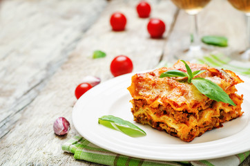

Lasagna

Das Lasagne Original mit Bolognese und Béchamel Soße schmeckt wie in Italien.
Zu Hause zauberst Du Dir den cremig leckeren, herzhaften Pasta-Klassiker mit
einer goldbraunen Käsekruste ganz einfach aus dem Backofen.
Zutaten
- Olivenöl
- Lasagneblätter
- Gouda
- Butter
- Mehlr
- uvm...
Steps
- Zuerst die Bolognesesauce zubereiten: Dafür Zwiebeln und Knoblauch
schälen und fein hacken. Die Karotten schälen und raspeln.
Dann Öl in einem Topf erhitzen, Faschiertes darin gleichmäßig
anrösten und Zwiebeln, Knoblauch und Karotten zugeben und weiter anbraten.
Tomaten und Tomatenmark sowie das Ketchup, Basilikum, Oregano, Thymian, Salz
und Pfeffer hinzugeben und auf kleinster Stufe ca. 10 Min. köcheln lassen.
- Anschließend die Bechamelsauce herstellen: Dafür Butter in einem Topf zerlassen,
Mehl zufügen und sofort mit einem Schneebesen umrühren. Jetzt ganz langsam unter
ständigem Rühren die Milch zufügen. Langsam aufkochen und rühren bis die Sauce
dicklich ist. Sodann mit Pfeffer, Salz und Muskat würzen.
- Für die Lasagne eine Auflaufform mit Olivenöl einfetten. Nun abwechselnd die
Lasagneblätter und Bolognesesauce einschichten. Mit den Lasagneblättern beginnen,
danach die Sauce usw. abwechselnd schichten.
- Ganz zum Schluss mit der Bechamelsauce abschließen und frisch geriebenen Gouda draufgeben.
Im vorgeheizten Ofen bei 180° C Heißluft ca. 30 Minuten backen.